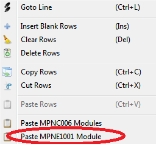

The remote modules configurator is a graphic tool useful for defining the configuration of the automation system and, once the PLC or Mect Operator Panel model has been defined, it allows the configuration of the “MPNE” remote nodes and their variables useful for the application.
The MPNE remote nodes graphic editor is only visible if at least one module of the MPNE family has been inserted in the project.
To insert a module, press the right mouse button in a row of the Crosstable and select “Paste MPNE1001 Module”.

In the following window you can set the address of the node you are using. If the Mect device has multiple RTU ports available, the system allows you to associate the port to the node. These settings can also be changed retrospectively in the graphic editor.

The interface is as follows:

In the field “Model” the PLC code or Mect operator panel apears.
In the field “MPNE10” you can select the node to be used for system configuration. The choice will be multiple if several remote nodes are combined to the same PLC or Mect Operator Panel.
The field “Port” is enabled when the PLC or Mect Operator Panel model has more than one 485 serial port and allows the choice of the port with which to connect the remote node.
The field “Node Id” is the address of the remote node and can be defined by the user.
The square button  allows you to rename the variables associated with the modules by changing the prefix “MPNE_” assigned by default by the system and the same for all modules.
allows you to rename the variables associated with the modules by changing the prefix “MPNE_” assigned by default by the system and the same for all modules.
The field “Exp1” defines the configuration of the expansion module n°1 between: “no Module, 8 Digital Input, 8 Digital Output, 2 AI – 1 AO”.
The field “Exp2” defines the configuration of the expansion module n°2 between: “no Module, 8 Digital Input, 8 Digital Output, 2 AI – 1 AO”.
Note: In the graphics editor, the Output modules with 4 or 8 relays of the MPNE module are not included in the choices as they are equivalent to the expansion “8 Digital Output”.
The three-state button  llows you to filter the variables in the list and is composed of three parts: a dark grey, a light grey and a blue one.
Depending on the state, different variables are displayed:
llows you to filter the variables in the list and is composed of three parts: a dark grey, a light grey and a blue one.
Depending on the state, different variables are displayed:
 The button only with dark gray activated displays the variables of the board ONLY.
The button only with dark gray activated displays the variables of the board ONLY.
 The button only with dark gray and light grey activated displays the variables of the board and the variables of the other expansion modules in use in the system.
The button only with dark gray and light grey activated displays the variables of the board and the variables of the other expansion modules in use in the system.
 The button with the activated dark gray, light gray and light blue displays the variables of the board, the variables of the other expansion modules in use and
the variables not yet associated with any expansion, but which could be used in the system.
The button with the activated dark gray, light gray and light blue displays the variables of the board, the variables of the other expansion modules in use and
the variables not yet associated with any expansion, but which could be used in the system.
When a new module is inserted, the variables of the inserted modules are automatically activated and displayed in the table below.
To view the variables associated with the other modules, use the three-state button  .
.
By clicking on one of the modules inserted in the system, only the variables of the selected module are displayed in the table.
The table is in READ-ONLY mode. By clicking on the desired variable you can directly access the Crosstable Editor where you can modify the data.